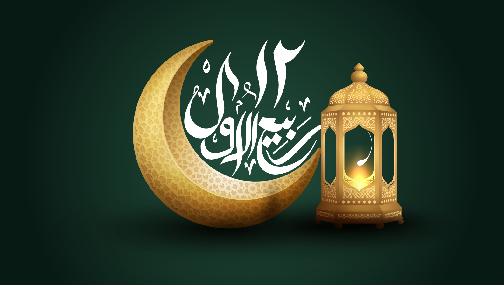

Rabi' al-Awwal :
Although historians and scholars disagree on the exact date of Muhammad's birth,[6] it is celebrated by some Muslims on the 12th or 17th of Rabi' al-awwal. However, some Muslims do not celebrate the Prophet's birthday, as neither the Prophet himself nor any of his companions observed any such birthday celebrations, and they do not consider it an Islamic obligation nor an act of any religious merit with any basis in the Quran or in any authentic Hadith.